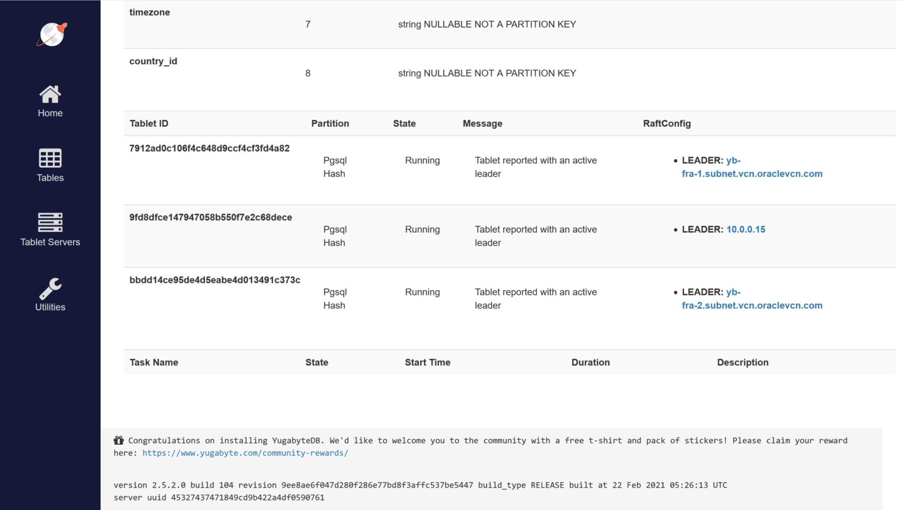
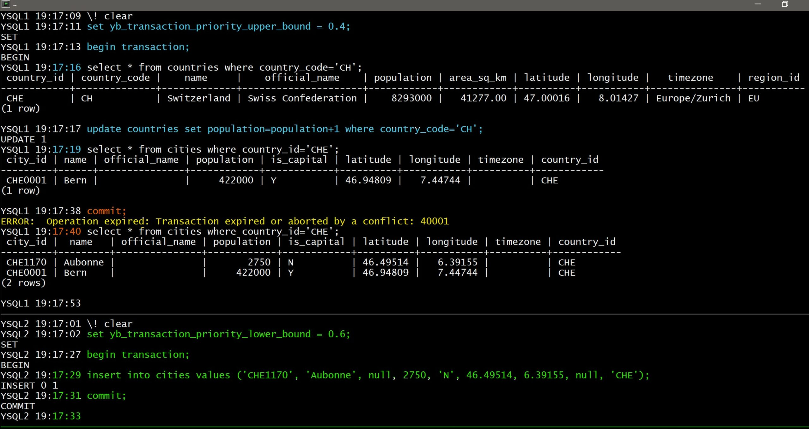
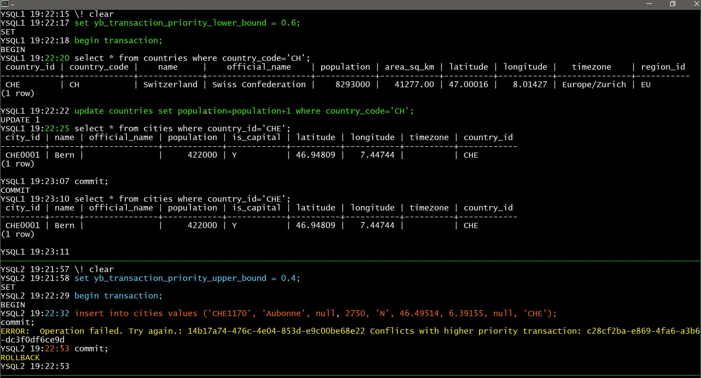
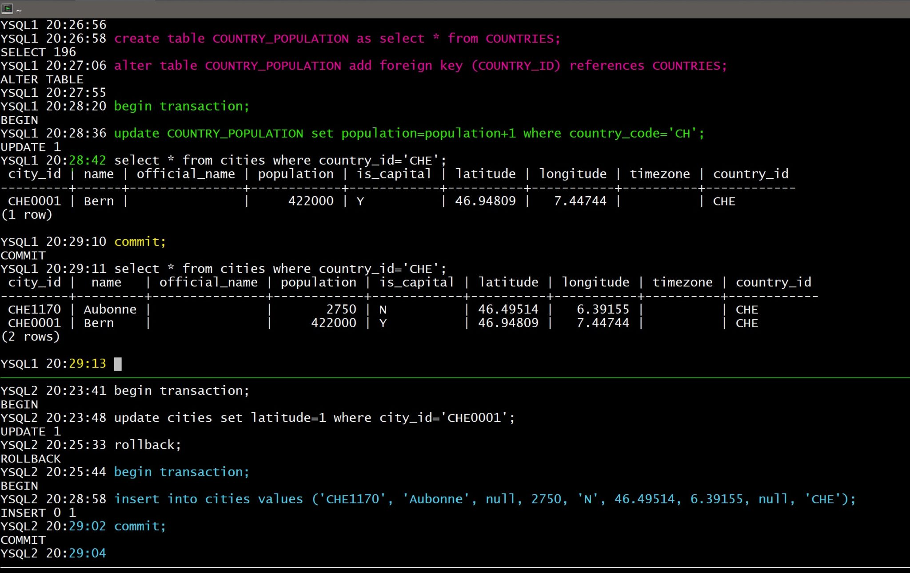

This was first published on https://www.dbi-services.com/blog/foreign-keys-in-mysql-nosql-newsql/ (2021-03-18)
Republishing here for new followers. The content is related to the versions available at the publication date.
.
In the NoSQL times, it was common to hear thinks like “SQL is bad”, “joins are bad”, “foreign keys are bad”. Just because people didn’t know how to use them, or they were running on a database system with a poor implementation of it. MySQL was very popular because easy to install, but lacking on many optimization features that you find in other open source or commercial databases. Sometimes, I even wonder if this NoSQL thing was not just a NoMySQL at its roots. When people encountered the limitations of MySQL and thought that it was SQL that was limited.
The following twitter thread, and linked articles, mention how DML on a child table can be blocked by DML on the parent. This is not a problem in some occasions (when this parent-child relationship is a composition where you work on the whole within the same transaction) but can be a problem when the parent is shared my many unrelated transactions.
Thoughts on foreign keys? The comment from @ShlomiNoach goes over some interesting points on why foreign keys should not be used: https://t.co/b6XG1oWRmb
— Fatih Arslan (@fatih) March 16, 2021
Surprised because I’ve not seen that even in the earliest versions of Oracle, I had to test it. Especially because MySQL and the InnoDB engines have evolved a lot since version 5. I’ll use Gerald Venzl sample data on countries and cities: https://github.com/gvenzl/sample-data/tree/master/countries-cities-currencies because he provides a SQL script that works on all databases without any changes.
{
echo "create database if not exists countries;"
echo "use countries;"
curl -s https://raw.githubusercontent.com/gvenzl/sample-data/master/countries-cities-currencies/install.sql
} | mysqlThis creates the tables and data with countries, and cities. There is a foreign key from cities that references countries.
use countries;
begin;
select * from countries where country_code='CH';
update countries set population=population+1 where country_code='CH';
I’ve updated some info in countries, leaving the transaction opened.
mysql> begin;
Query OK, 0 rows affected (0.00 sec)
mysql> select * from countries where country_code='CH';
+------------+--------------+-------------+---------------------+------------+------------+----------+-----------+---------------+-----------+
| country_id | country_code | name | official_name | population | area_sq_km | latitude | longitude | timezone | region_id |
+------------+--------------+-------------+---------------------+------------+------------+----------+-----------+---------------+-----------+
| CHE | CH | Switzerland | Swiss Confederation | 8293000 | 41277.00 | 47.00016 | 8.01427 | Europe/Zurich | EU |
+------------+--------------+-------------+---------------------+------------+------------+----------+-----------+---------------+-----------+
1 row in set (0.00 sec)
mysql> update countries set population=population+1 where country_code='CH';
Query OK, 1 row affected (0.00 sec)
Rows matched: 1 Changed: 1 Warnings: 0
mysql> select * from countries where country_code='CH';
+------------+--------------+-------------+---------------------+------------+------------+----------+-----------+---------------+-----------+
| country_id | country_code | name | official_name | population | area_sq_km | latitude | longitude | timezone | region_id |
+------------+--------------+-------------+---------------------+------------+------------+----------+-----------+---------------+-----------+
| CHE | CH | Switzerland | Swiss Confederation | 8293001 | 41277.00 | 47.00016 | 8.01427 | Europe/Zurich | EU |
+------------+--------------+-------------+---------------------+------------+------------+----------+-----------+---------------+-----------+
1 row in set (0.00 sec)
With this transaction still on-going, I’ll insert, from another session, a new child row for this parent value: another country in Switzerland
use countries;
begin;
select * from cities where country_id='CHE';
insert into cities values ('CHE1170', 'Aubonne', null, 2750, 'N', 46.49514, 6.39155, null, 'CHE');
This blocks for a while… innodb-lock-wait-timeout defaults to 50 seconds.
Here is the output:
mysql> begin;
Query OK, 0 rows affected (0.00 sec)
mysql> select * from cities where country_id='CHE';
+---------+------+---------------+------------+------------+----------+-----------+----------+------------+
| city_id | name | official_name | population | is_capital | latitude | longitude | timezone | country_id |
+---------+------+---------------+------------+------------+----------+-----------+----------+------------+
| CHE0001 | Bern | NULL | 422000 | Y | 46.94809 | 7.44744 | NULL | CHE |
+---------+------+---------------+------------+------------+----------+-----------+----------+------------+
1 row in set (0.00 sec)
mysql> insert into cities values ('CHE1170', 'Aubonne', null, 2750, 'N', 46.49514, 6.39155, null, 'CHE');
ERROR 1205 (HY000): Lock wait timeout exceeded; try restarting transaction
mysql>
This insert tries to lock the parent row in share mode, and because it is currently being updated by session 1, the lock cannot be acquired. This is a very simple case of contention that can happen in many cases. Still there in MySQL 8
curl -s https://raw.githubusercontent.com/gvenzl/sample-data/master/countries-cities-currencies/install.sql | psql
This creates the tables and data with countries, and cities. There is a foreign key from cities that references countries.
begin transaction;
select * from countries where country_code='CH';
update countries set population=population+1 where country_code='CH';
I’ve updated some info in countries, leaving the transaction open.
postgres=# begin transaction;
BEGIN
postgres=# select * from countries where country_code='CH';
country_id | country_code | name | official_name | population | area_sq_km | latitude | longitude | timezone | region_id
------------+--------------+-------------+---------------------+------------+------------+----------+-----------+---------------+-----------
CHE | CH | Switzerland | Swiss Confederation | 8293000 | 41277.00 | 47.00016 | 8.01427 | Europe/Zurich | EU
(1 row)
postgres=# update countries set population=population+1 where country_code='CH';
UPDATE 1
postgres=# select * from countries where country_code='CH';
country_id | country_code | name | official_name | population | area_sq_km | latitude | longitude | timezone | region_id
------------+--------------+-------------+---------------------+------------+------------+----------+-----------+---------------+-----------
CHE | CH | Switzerland | Swiss Confederation | 8293001 | 41277.00 | 47.00016 | 8.01427 | Europe/Zurich | EU
(1 row)
With this transaction still on-going, I’ll insert, from another session, a new child row for this parent value: another country in Switzerland
begin transaction;
select * from cities where country_id='CHE';
insert into cities values ('CHE1170', 'Aubonne', null, 2750, 'N', 46.49514, 6.39155, null, 'CHE');
commit;
I am able to commit my transaction without any locking problem.
Here is the output:
postgres=# begin;
BEGIN
postgres=# select * from cities where country_id='CHE';
city_id | name | official_name | population | is_capital | latitude | longitude | timezone | country_id
---------+------+---------------+------------+------------+----------+-----------+----------+------------
CHE0001 | Bern | | 422000 | Y | 46.94809 | 7.44744 | | CHE
(1 row)
postgres=# insert into cities values ('CHE1170', 'Aubonne', null, 2750, 'N', 46.49514, 6.39155, null, 'CHE');
INSERT 0 1
postgres=# commit;
COMMIT
I was able to commit my transaction
postgres=# select * from countries where country_code='CH';
country_id | country_code | name | official_name | population | area_sq_km | latitude | longitude | timezone | region_id
------------+--------------+-------------+---------------------+------------+------------+----------+-----------+---------------+-----------
CHE | CH | Switzerland | Swiss Confederation | 8293001 | 41277.00 | 47.00016 | 8.01427 | Europe/Zurich | EU
(1 row)
postgres=# select * from cities where country_id='CHE';
city_id | name | official_name | population | is_capital | latitude | longitude | timezone | country_id
---------+---------+---------------+------------+------------+----------+-----------+----------+------------
CHE0001 | Bern | | 422000 | Y | 46.94809 | 7.44744 | | CHE
CHE1170 | Aubonne | | 2750 | N | 46.49514 | 6.39155 | | CHE
(2 rows)
postgres=# commit;
COMMIT
In the first session, I can see immediately the changes because I’m in the default READ COMMITED isolation level. In SERIALIZABLE, I would have seen the new row only after I completed by transaction that started before this concurrent insert.
Of course, Oracle can also run those transactions without any lock. There are no row level lock involved in those transactions except for the row that is modified by the transaction. But as long as the referenced key (the primary key of countries here) is not updated, there are no locks in the other table. Only if the key was updated, the index entry on the foreign key would have been “locked” to avoid inserting a row referencing a parent that will be removed.
I’ll not paste a demo here, as I have many ones available from this post: https://franckpachot.medium.com/oracle-table-lock-modes-83346ccf6a41. Oracle is very similar to PostgreSQL here. If you want to know the difference between Oracle and PostgreSQL about foreign keys, I’ve written about that on the CERN blog: https://db-blog.web.cern.ch/blog/franck-pachot/2018-09-unindexed-foreign-keys-oracle-and-postgresql
In NoSQL databases you don’t lock anything and you accept inconsistencies. Actually, all will depend on your data model. You may store a “country” item with a list of cities in a document store. Key: country id. Value: JSON with country attributes and list of cities with their attribute. Here either you lock in the same way MySQL does: don’t touch to the item while another one is modifying it. Or you can store those as multiple items (the “single table model” for DynamoDB for example) and then people can modify country and cities concurrently. They don’t lock each other but of course you may eventually live in a city which belongs to no country… This is the CAP theorem: scalability vs. consistency. You have this choice in your data model: either you cluster all items together in a single document, or you shard them within the datastore.
What about distributed databases? Having a foreign key referencing a parent in another node is a bit more complex because there is a compromise to define: wait on an internet latency, or raise an exception to re-try the operation. YugaByte DB is a NewSQL database which aims at full consistency, SQL and ACID, with the maximum scalability and availability possible.
Note that this is a new database, which has still a lot of work in progress in this area, all documented: https://docs.yugabyte.com/latest/architecture/transactions/explicit-locking, and implemented while the users are asking for it. So, if you read this several weeks after the publishing date… re-run the example and you may have good surprises.
I have a 3 nodes YugaByteDB cluster over 3 regions (I have a few Oracle Free Tier tenants, with free VMs always up).
{
curl -s https://raw.githubusercontent.com/gvenzl/sample-data/master/countries-cities-currencies/install.sql
} | /home/opc/yugabyte-2.5.2.0/bin/ysqlsh -h localhost -U yugabyte -d yugabyte -eThis has created and populated the table, auto-sharded into my 3 nodes:

[opc@yb-fra-1 ~]$ /home/opc/yugabyte-2.5.2.0/bin/ysqlsh
ysqlsh (11.2-YB-2.5.2.0-b0)
Type "help" for help.
yugabyte=# begin transaction;
BEGIN
yugabyte=# select * from countries where country_code='CH';
country_id | country_code | name | official_name | population | area_sq_km | latitude | longitude | timezone | region_id
------------+--------------+-------------+---------------------+------------+------------+----------+-----------+---------------+-----------
CHE | CH | Switzerland | Swiss Confederation | 8293000 | 41277.00 | 47.00016 | 8.01427 | Europe/Zurich | EU
(1 row)
yugabyte=# update countries set population=population+1 where country_code='CH';
UPDATE 1
yugabyte=#
I have run the same as before: on one session updating the parent table.
[opc@yb-fra-3 ~]$ /home/opc/yugabyte-2.5.2.0/bin/ysqlsh
ysqlsh (11.2-YB-2.5.2.0-b0)
Type "help" for help.
yugabyte=# begin transaction;
BEGIN
yugabyte=# select * from cities where country_id='CHE';
city_id | name | official_name | population | is_capital | latitude | longitude | timezone | country_id
---------+------+---------------+------------+------------+----------+-----------+----------+------------
CHE0001 | Bern | | 422000 | Y | 46.94809 | 7.44744 | | CHE
(1 row)
yugabyte=# insert into cities values ('CHE1170', 'Aubonne', null, 2750, 'N', 46.49514, 6.39155, null, 'CHE');
ERROR: Operation failed. Try again.: d993bd6d-2f76-40ea-9475-84d09e5e0438 Conflicts with higher priority transaction: efd1aaaf-12f9-4819-9e0c-41ee9c6cfb7b
yugabyte=# commit;
ROLLBACK
When inserting a new child, I got a failure because optimistic locking is used there. We don’t wait but serialization conflicts have to cancel one transaction.
Note that it could be one or the other session that is canceled. Running the same example again I was able to insert and commit a child:
yugabyte=# insert into cities values ('CHE1170', 'Aubonne', null, 2750, 'N', 46.49514, 6.39155, null, 'CHE');
INSERT 0 1
yugabyte=# commit;
COMMIT
This is successful but now the session 1 transaction is in conflict.
select * from countries where country_code='CH';
country_id | country_code | name | official_name | population | area_sq_km | latitude | longitude | timezone | region_id
------------+--------------+-------------+---------------------+------------+------------+----------+-----------+---------------+-----------
CHE | CH | Switzerland | Swiss Confederation | 8293001 | 41277.00 | 47.00016 | 8.01427 | Europe/Zurich | EU
(1 row)
yugabyte=# commit;
ERROR: Operation expired: Transaction expired or aborted by a conflict: 40001
yugabyte=# select * from countries where country_code='CH';
country_id | country_code | name | official_name | population | area_sq_km | latitude | longitude | timezone | region_id
------------+--------------+-------------+---------------------+------------+------------+----------+-----------+---------------+-----------
CHE | CH | Switzerland | Swiss Confederation | 8293000 | 41277.00 | 47.00016 | 8.01427 | Europe/Zurich | EU
(1 row)
The transaction started in session 1 cannot be completed and must be re-tried.
This is a general idea with distributed databases, SQL or NoSQL, optimistic locking is often preferred for scalability: better be ready to re-retry in the rare case of conflict rather than waiting for lock acquisition on other nodes. But I mentioned that one or the other transaction was cancelled. Which one? at random? Yes, by default each transaction has a random priority assigned. However, when I test or demo the behavior I want predictable results. This is possible by reducing the range of random priority within non-overlapping bounds.
The defaults are between 0 and 1:
yugabyte=# show yb_transaction_priority_upper_bound;
yb_transaction_priority_upper_bound
-------------------------------------
1
(1 row)
yugabyte=# show yb_transaction_priority_lower_bound;
yb_transaction_priority_lower_bound
-------------------------------------
0
(1 row)Now, if I set the session 1 in the lower range (yb_transaction_priority_lower_bound=0, yb_transaction_priority_upper_bound=0.4) and the session 2 in the higher range (yb_transaction_priority_lower_bound=0.6, yb_transaction_priority_upper_bound=1), I know that the session 1 will have its transaction aborted on conflict (look at the timestamps, or colors if you can see them: I’ve run blue first, with low priority, then green with higher priority in the bottom session, then red, back to first session where it fails):

But if I set the session 1 in the higher range (yb_transaction_priority_lower_bound=0.6, yb_transaction_priority_upper_bound=1) and the session 2 in the lower range (yb_transaction_priority_lower_bound=0, yb_transaction_priority_upper_bound=0.4) I know that the session 2 will have its transaction failed on conflict (I started with green here in higher priority session 1, then blue and red in the bottom session where it failed):

Again, this is a choice: optimistic locking. Better retry sometimes than locking always.
However, even if the database can implement locking with good efficiency, you should think about the data model. Forget about normal forms here. Think of tables as business entities where attributes are tightly coupled together, but coupling between entities is just a possibility for some use cases. When looking at the domain model, CITY is an entity, and COUNTRY is another. However, it may require some transformation between the domain model and the implementation. There is the COUNTRY as a code, with a name and which is an aggregation of CITY. And it may be a different entity from the country as location where people live, with the population number that I’ve updated. Maybe the POPULATION attribute I’ve been updating belongs this other COUNTRY_POPULATION table. Don’t worry about joins: join can scale in a RDBMS with purpose-built joins algorithms. And, anyway, maybe one day this table with have temporality added because population changes and history is interesting to keep. And with this data model, whatever the locking mechanisms, you can update the population and and cities without blocking each-others. That’s how I think about normalization: business meaning, coupling, cardinalities, evolution…
Let me show that in my YugaByte sessions:
YSQL1 20:26:58 create table COUNTRY_POPULATION as select * from COUNTRIES;
SELECT 196
YSQL1 20:27:06 alter table COUNTRY_POPULATION add foreign key (COUNTRY_ID) references COUNTRIES;
ALTER TABLE
YSQL1 20:27:55
I have created another table for the population info, with a foreign key to COUNTRIES. Of course, I should remove the columns from the tables, keeping only the foreign key, but that doesn’t change my example and I keep it simple.

There’s no reason to remove foreign keys here, thanks to correct relational data modeling, and efficient handling even in a the distributed database. If you can’t rely on the database to handle that, you need lot of additional code, complex testing for race condition and failure scenario, or you risk hard to recover data inconsistency.